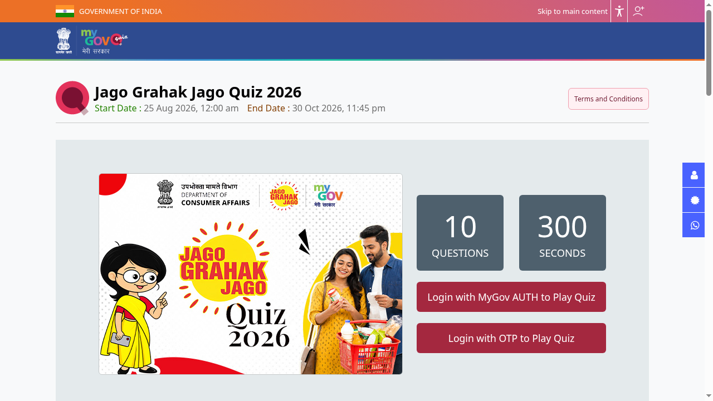

Jago Grahak Jago Quiz 2026: 10 winners get ₹5,000 each, ends 30 October
The Department of Consumer Affairs and MyGov are running the Jago Grahak Jago Quiz 2026, a 10-question national quiz on consumer rights. It is open to all Indian citizens. Ten winners get ₹5,000 each, picked by random draw from the top scorers. It runs until 30 October 2026, 11:45 PM.

Official publisher artwork hosted by its publisher. Official source. Independent guide, not affiliated or sponsored. Artwork and trademarks belong to their owners.
What does the quiz cover?
The official page lists the National Consumer Helpline (NCH), e-Jagriti, the National Test House (NTH), the Bureau of Indian Standards (BIS), the Central Consumer Protection Authority (CCPA), Legal Metrology, dark patterns and other consumer initiatives, plus consumer rights and grievance redressal.
Rules from the official page
| Who | All Indian citizens. Employees of the Department of Consumer Affairs and MyGov are not eligible. |
|---|---|
| Format | Up to 10 questions within 300 seconds. The quiz starts when you click Play Quiz. |
| Entries | One per participant. Submitted entries cannot be withdrawn. |
| Dates | 25 August 2026 to 30 October 2026, 11:45 PM. |
What is the prize?
Ten winners get a cash prize of ₹5,000 each. The page headline says "Top 10", but rule 10 says winners are selected solely by an automated random draw from a pool of everyone who got the highest score and submitted in time. So a top score gets you into the pool; it does not rank you. Entering does not guarantee a prize. Unfair means, impersonation or double participation void an entry, and the organisers are not responsible for entries lost to technical problems.
How to play: step by step
Checked on the live MyGov quiz pages on 19 October 2026.
- Open the official quiz page: quiz.mygov.in/quiz/jago-grahak-jago-quiz-2026. The page shows the quiz banner, end date (30 October 2026, 11:45 PM), 10 questions and 300 seconds.
- Tap Login with OTP to Play Quiz (or Login with MyGov AUTH). If the page shows "Closed", log in first - it usually opens after login.
- New to MyGov: register with MyGov Auth or with DigiLocker (MeriPehchaan single sign-on). Already registered: enter your email or mobile number and tap Request OTP.
- Enter the OTP sent to your email/mobile to log in.
- Come back to the quiz page, read the Terms and Conditions, then click Play Quiz - the 5-minute timer starts when you click.
- Answer the 10 questions and submit. Entries cannot be withdrawn after submission.
- Ten winners get Rs 5,000 each, picked by random draw from the top scorers, so answer carefully rather than just fast.


Steps 4 to 7 happen inside your own login, so they are not shown as screenshots.
Video guides
We searched YouTube on 19 October 2026 for a step-by-step participation video for this quiz in English and in Malayalam. We could not verify one that covers this quiz and the current MyGov portal, so we are not linking any rather than risk an outdated or unrelated video. (Videos sharing quiz answers exist; we do not link those.)
A careful checklist
- Open quiz.mygov.in and find the quiz yourself.
- Read the full Terms and Conditions on the page.
- Brush up on the helplines and bodies listed above.
- Start when you have 5 uninterrupted minutes and finish before 30 October 2026, 11:45 PM.
We did not log in or play. We read the prize and all 15 rules on the quiz page.
Related quiz
A separate National Quiz Competition on Consumer Protection Law 2026 (NLU Delhi with MyGov) is also running, with its own rules and prizes, until 25 November 2026.
Frequently asked questions
Is there an entry fee?
The page does not mention one.
Can I try again to improve my score?
No. Multiple entries from the same participant are not accepted.
Source: Official MyGov quiz page. Checked 8 October 2026; participation steps and video search re-checked 19 October 2026. This is an AiCoN explainer, not a government publication.